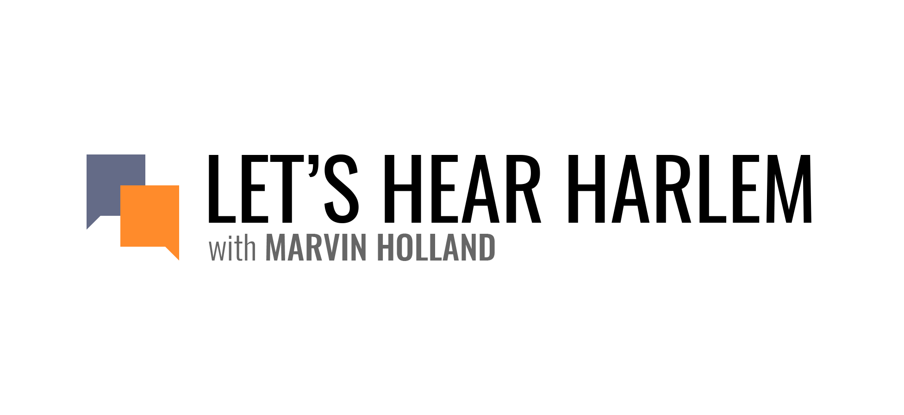
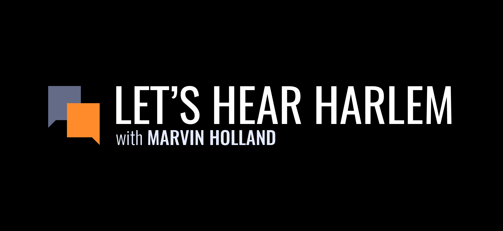
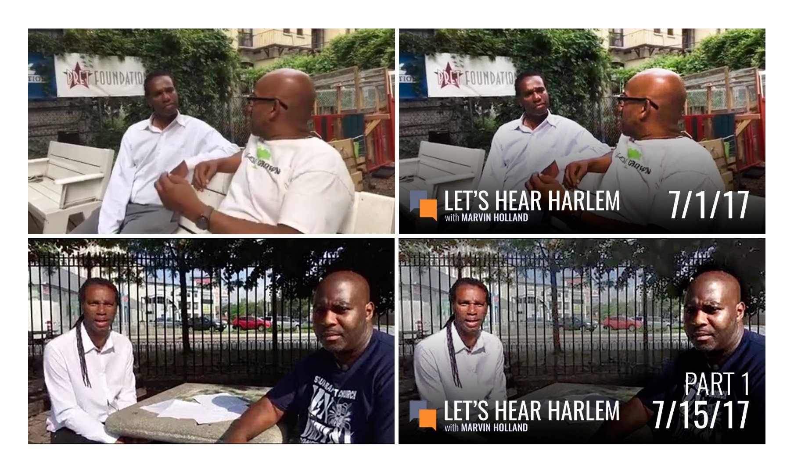
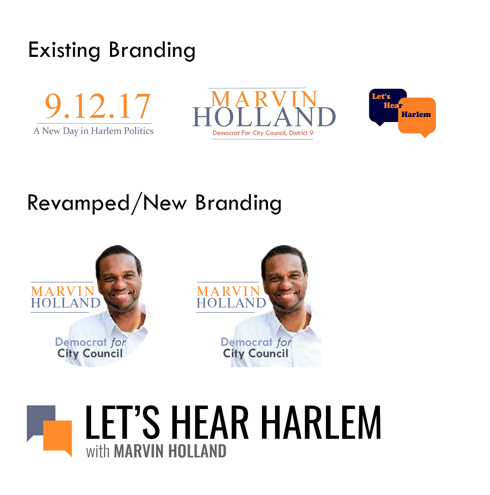
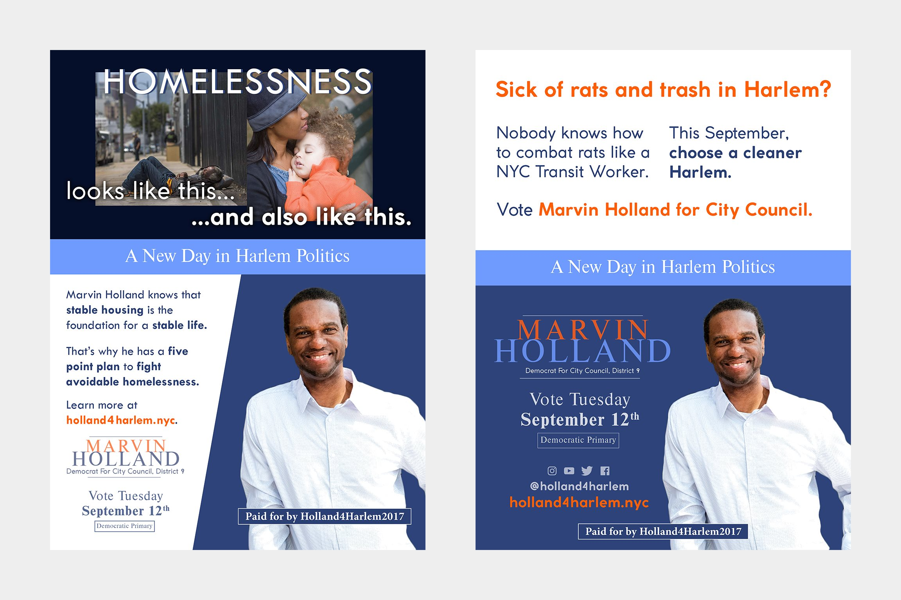
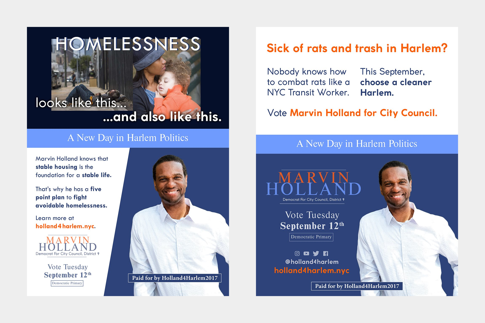
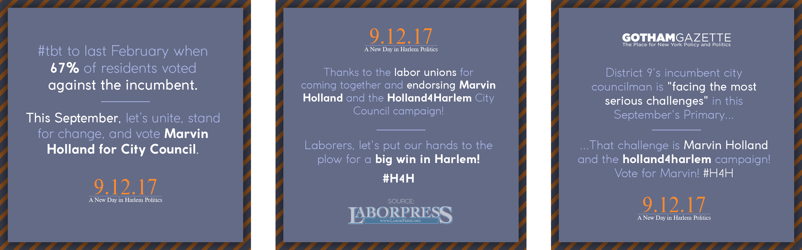
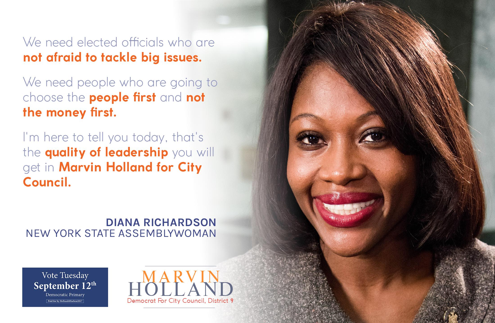
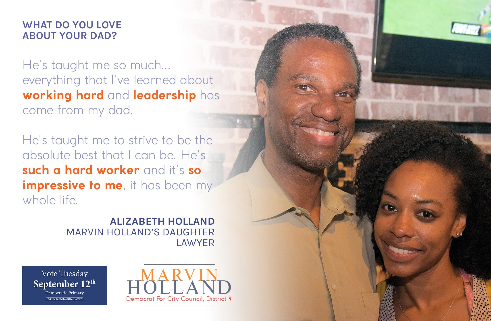

Holland4Harlem (2017)
Background
Marvin Holland is a U.S. Navy Veteran and former Transit Workers Union director that made a bid for NYC’s District 9 City Council seat in the 2017 election season. I joined the Holland4Harlem campaign as a social media intern helping with the YouTube page at first, then took on a graphic designer role, working closely with the campaign manager and social media team to create and refresh branding, posters, and animations. This case study showcases some of the work I did.
Let's Hear Harlem
“Let’s Hear Harlem is a podcast series where Democratic City Council Candidate Marvin Holland highlights issues facing Harlem by interviewing Harlem Residents and subject experts.”
Based off of existing logos and videos, I redesigned the logo and brand for LHH and created thumbnails.
  
Main Branding
A previous designer had been hired to develop branding, but the resulting graphics were inconsistent and unpolished, including a file that I found called “quick-lhh-logo.jpg” (first image, upper right).
I worked with the existing graphics and photography to develop a more polished and consistent set of graphics, mostly used in social media and posters.

Print Graphics
I worked closely with the campaign strategy team, as well as some third parties, to create poster-sized print designs highlighting key policy stances and campaign action messages.
These were printed and hung up, as well as shared on social media.
 

Social Media Graphics
In addition to print posters, I also worked closely with the social media team to create graphics directly posted to social media accounts.
These graphics were shared on Instagram, Twitter, and Facebook, leading to increased user interaction and exposure.
  Conclusion
Marvin Holland’s bid for District 9 City Councilman effectively ended in the September 12th Democratic Primaries. He was the second-most popular candidate, winning 20% of Harlem, after incumbent Bill Perkins, who won 49%. Perkins went on to win the general elections with 78% of voters.
Nevertheless, it was a great experience working with Marvin and his campaign team. For the first time, I was able to apply my graphic design skills to a real client, with real use cases, deadlines, and applications. I learned to communicate clearly, adapt rapidly and flexibly, and take initiative in situations like rebrandings. Through it all, I was also able to get involved in my community, learn about what the people around me have to say, and reach out to them on behalf of a a local grassroots politician.